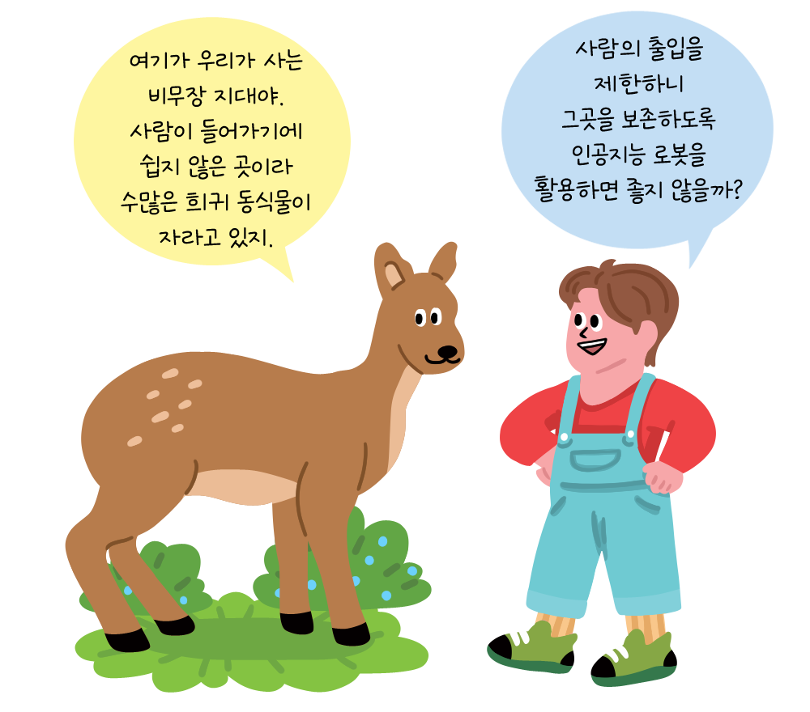

-
-
비무장 지대를 지키는 데 필요한 로봇 개발 의뢰서
비무장 지대는 1953년 이후 일반인의 출입을 제한하면서 야생 동물의 안식처가 됐습니다. 그러나 여전히 전쟁에 따른 포탄, 지뢰, 철조망 등 위험 물질이 동식물에 피해를 주고 있습니다. 그런데 비무장 지대로 사람이 접근하기 어렵다는 문제가 있습니다.
-
이에 인공지능 로봇을 사용하는 것이 문제를 해결하는 한 방법이 될 수 있습니다. 비무장 지대를 지키는 인공지능 로봇에는 비무장 지대의 환경을 관찰하고 위험 물질을 제거하는 기능이 있어야 합니다. 이를 고려해서 로봇을 구체적으로 설계해 주시면 좋겠습니다.
-
추가 질문비무장 지대를 지키는 인공지능 로봇에는 또 어떤 기능이 있으면 좋을까요?
울퉁불퉁한 길도 어렵지 않게 이동할 수 있어야 합니다.
여러 사물을 잘 식별할 수 있어야 합니다.
-
비무장 지대를 지키는 인공지능 로봇을 떠올려 봅시다.
-
-
- 1
- 2
-
비무장 지대에서 활동하는 로봇은 어떻게 생기면 좋을까요?

 비무장 지대의 동물들이 낯설게 느끼지 않도록
비무장 지대의 동물들이 낯설게 느끼지 않도록
익숙한 자연물처럼 생기면 좋을 것 같습니다. -
비무장 지대에서 인간 대신 로봇이 들어가
활동해야 하는 까닭은 무엇 때문일까요?
비무장 지대에는 지뢰, 포탄과 같은 위험 물질이 있어서
인간이 직접 활동하면 크게 다치거나
생명을 잃을 위험이 있기 때문입니다.